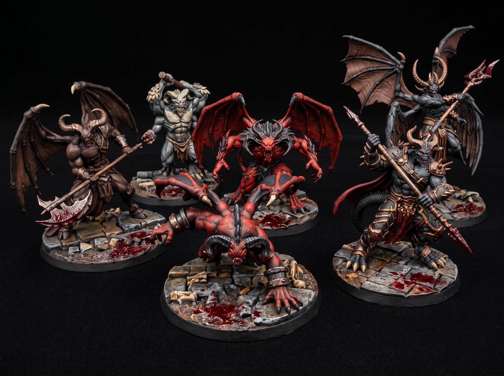

How to Paint Metal Armor on 3D Printed Miniatures
July 26, 2026

Start with a solid black primer. A dark base hides microscopic layer lines on 3D printed miniatures. Apply a heavy steel metallic basecoat across the entire armor set. Keep your paint thin to preserve crisp details. Let the coat dry completely before moving forward.
Switch to a bright silver for your drybrush pass. Wipe almost all paint off your brush onto a paper towel. Flick the bristles downward across the raised armor edges. This catches the sharpest details without filling the recesses. It creates instant contrast on your tabletop RPG minis.
Apply a dark wash directly into the armor joints. The wash settles in deep shadows and defines every individual plate. Do not flood the flat surfaces. Dab away excess pooling with a clean brush. This adds grime and buries any remaining print artifacts.
Finish with a bright silver edge highlight on the highest surfaces. Focus only on shoulder rims, blade edges, and helmet crests. Drag the side of your brush tip along the hard edges rather than using the point. Your miniature painting is complete and ready for tabletop wargaming.
Get free miniatures:
- Fantasy: https://cults3d.com/@BattleFoundry
- Scifi: https://cults3d.com/@BATTLEFOUNDRYSCIFI
- Grimdark: https://cults3d.com/@DREADWORKS
- Resin Statue: https://cults3d.com/@BlacksiteSyndicate